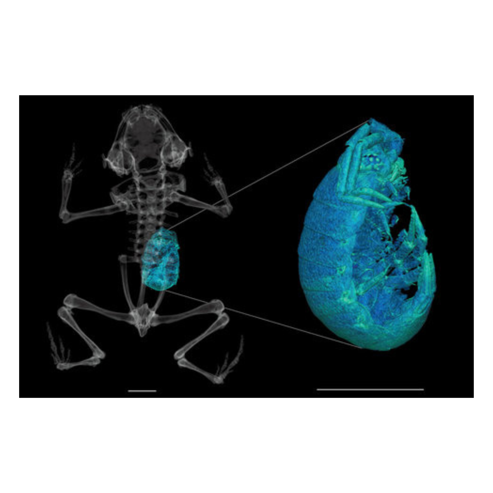
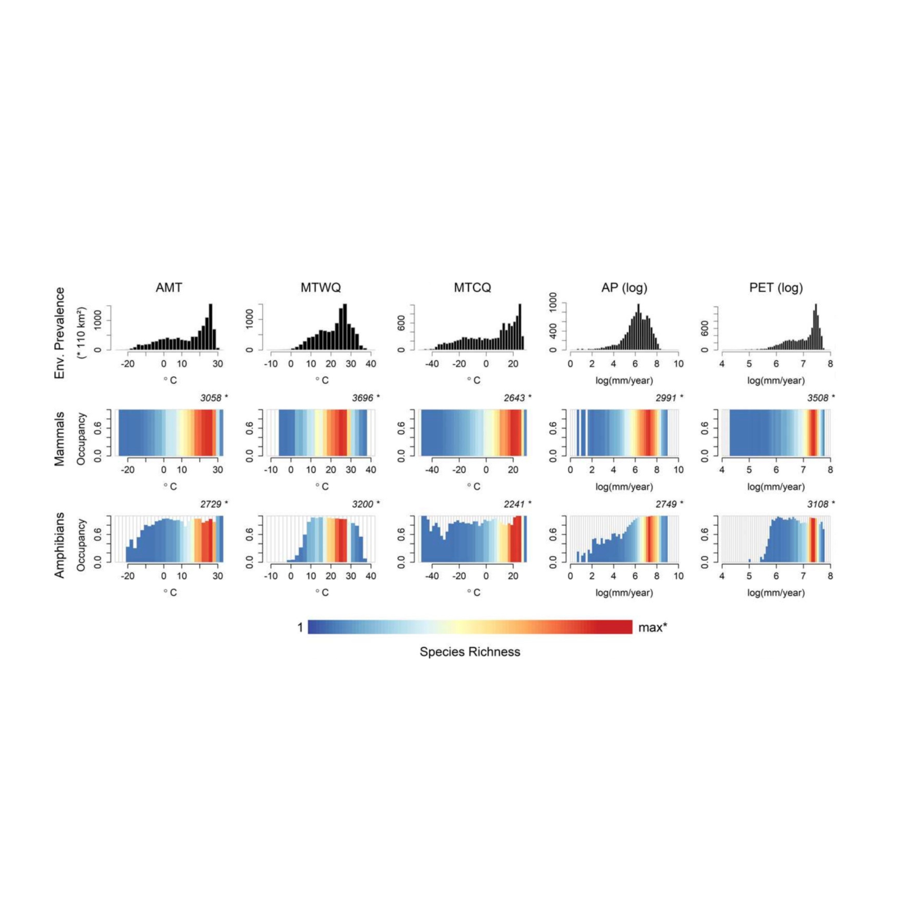
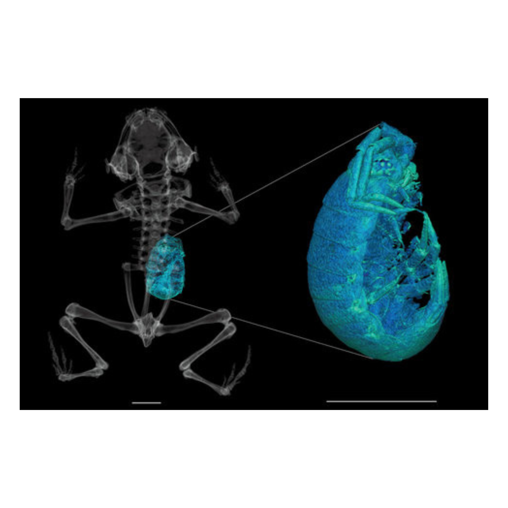
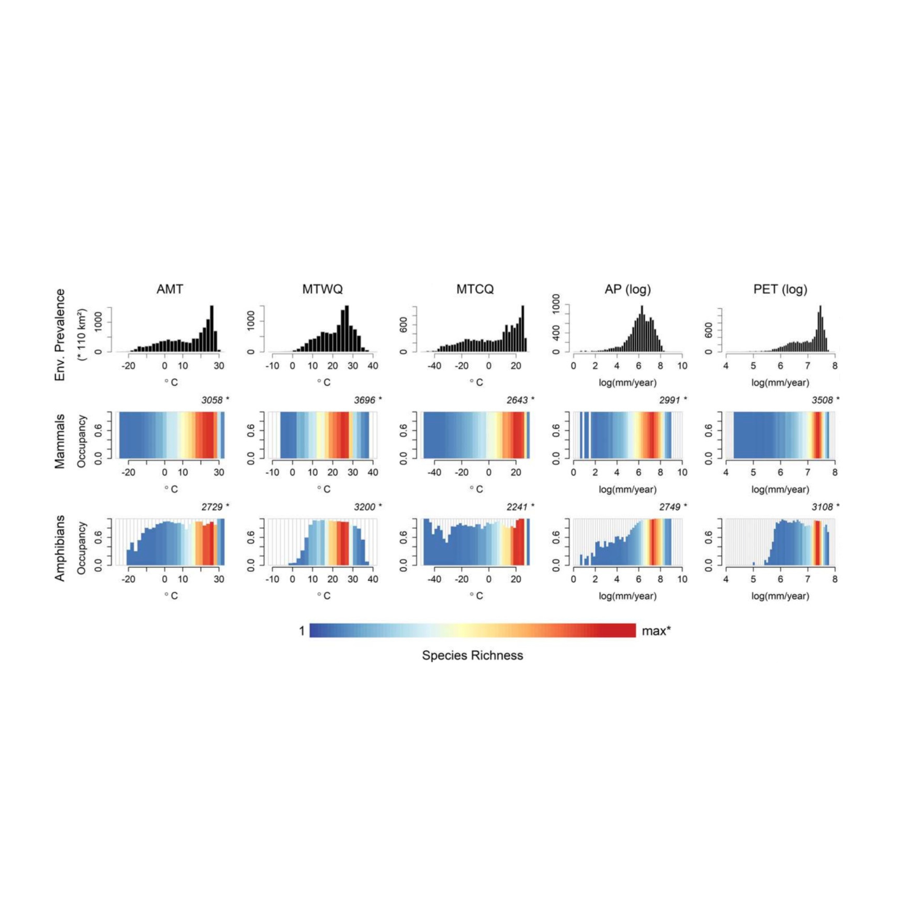

RESEARCH
The main focus of our research is to understand the mechanisms that generate and maintain biological diversity
The distribution of species on the planet is the complex outcome of a myriad of processes operating at multiple temporal and spatial scales. In our research we integrate information on species distributions, phylogenetic comparative methods, and bioclimatic data to understand the climatic niche evolution and its implications to species distributions and diversity gradients.
 



MEMBERS
Dr. Marcio R. Pie
Senior Lecturer in Ecology at Edge Hill University, UK. Connoisseur of ant-sized frogs and frog-sized ants.

Paula Stica
Ph.D. student in the Ecology & Conservation Graduate Program. She is interested applications of eDNA to monitor biodiversity.
Vilmar Fernando Bueno Junior
M.Sc. student in the Zoology Graduate Program. His project focuses on snakes of cloud forests in the Atlantic Rainforest of Brazil.
PUBLICATIONS
In press
202. Cosgrove, D. & Pie, M.R. Native range cannibalism in Teira dugesii: an observation of intraspecific predation in Madeira’s endemic wall lizard. Herpetological Bulletin.
2025
200. Ostrensky, A., R.V.V. Leite, A.P.S. Bertão, P.V. Stica, A. Horodesky, O.S. Mädder Netto, M.R. Pie, D. Pestana, T.L. Zanin & G. Dal Pont. 2025. Assessing the bioinvasion of the golden mussel (Limnoperna fortunei) through different watersheds in South Brazil: a comparison between quali‐quantitative microscopic and molecular techniques?. Biological Invasions 27: 16.
2024
199. Sandretti-Silva, G., Correa, L., Amirati, M., Laurino, I.R.A., Passos, F.C., Pie, M.R., Bornschein, M.R.. The win-stay, lose-switch renesting strategy of a territorial bird endemic to subtropical salt marshes. Frontiers in Ecology and Evolution.
198. Donghao, Wu; Cong, Liu; S., Caron Fernanda; Yuanyuan, Luo; Pie, Marcio R.; Mingjian, Yu; Paul, Eggleton; Chengjin, Chu. Habitat fragmentation drives pest termite risk in humid, but not arid, biomes. One Earth.
197. Pie, M.R., Divieso, R., & Caron, F.S. 2024 Does Clade Density Constrain Geographical Range Evolution?. Ecology & Evolution. 14: e70438.
196. Chen, B., Dai, W.Z., Li, X.L., Mao, T.R., Liu, Y., Pie, M.R., Yang, J. and Meegaskumbura, M. 2024. Wall-following: phylogenetic context of an enhanced behaviour in stygomorphic Sinocyclocheilus (Cypriniformes: Cyprinidae) cavefishes. Ecology & Evolution. 14: e11575.
195. Bornschein, M. R., Sandretti-Silva, G., Sobotka, D. D., Corrêa, L., Reinert, B. L., Vannucchi, F. S., & Pie, M. R. 2024. Revision of the conservation status and assessment of the Green Status of the Parana Antwren Formicivora acutirostris with management proposals. Bird Conservation International, 34: 1-15.
194. Caron, F. S., Rivadeneira, D., Rabinovich, J., Pie, M. R., Morimoto, J. 2024. Range size positively correlates with temperature and precipitation niche breadths but not with dietary niche breadth in triatomine insects, vectors of Chagas disease. PLoS Neglected Tropical Diseases, 18, e0012430.
193. Divieso, R., Pie, M.R., & Hortal, J. 2024. On the macroecology of rarity and vulnerability to extinction in terrestrial mammals. Biological Conservation, 296, 110673.
192. Caron, F.S. & Pie, M.R. 2024. The evolution of body size in terrestrial vertebrates. Evolutionary Biology, 51, 283–294.
191. Caron, F.S. & Pie, M.R. 2024. The macroevolution of sexual size dimorphism in birds. Biological Journal of the Linnean Society, blad168.
2023
190. Pie, Marcio R.; S., Caron Fernanda; Thom, Dallimore; Helena, Einzmann; Peter, Hietz; Michael, Kessler; Nunes, Ramos Flavio; Costa, Elias João Pedro; Holger, Kreft; Thorsten, Krömer; Carmona, Higuita Maria Judith; Daniel, Zuleta; Giesta, Machado; De, Gasper André Luís; Gerhard, Zotz; Glenda, Mendieta Leiva; Antonio, Jimenez-Lopez Derio; Fernando, Mendes Alex; Pedro, Brancalion; Sara, Mortara; Thomas, Blum Christopher; Victória, Irume Mariana; Nayely, Martínez-Meléndez Nayely; Maria, Benavides Ana; Renato, Boelter Carlos; Sven, Batke. 2023. Phylogenetic diversity and the structure of host-epiphyte interactions across the Neotropics. PeerJ. v.11, p.e15500.
189. Pie, M.R. & Caron, F.S. 2023. Substantial variation in species ages among vertebrate clades. Evolutionary Journal of the Linnean Society, 2, 1-7.
188. Nickele, M.A., Reis Filho, W., Penteado, S.R.C., Queiroz, E.C., da Silva, L.C.R., Camargo, T.S., Casadei-Ferreira, A., Feitosa, R.M., Pie, M.R. 2023. Assessing forest restoration effectiveness in the Seasonal Semideciduous Forest in the Upper Paraná Atlantic Forest ecoregion using epigaeic ant assemblages. Journal of Tropical Biology, 39, e37.
187. Yin Chen Wan, María José Navarrete Méndez, Lauren O’Connell, Lawrence Hart Uricchio, Alexandre-Benoit Roland, Martine Maan, Santiago Ron, Mileidy Betancourth-Cundar, Marcio R. Pie, Kimberly Anne Howell, Corinne Lee Richards-Zawacki, Molly E. Cummings, David C. Cannatella, Juan C. Santos, and Rebecca D. Tarvin 2023. Selection on Visual Opsin Genes in Diurnal Neotropical Frogs and Loss of the SWS2 Opsin in Poison Frogs. Molecular Biology and Evolution, 40, msad206.
186. Klunk, C.L., Argenta, M.A., Rosumek, F.B., Schmelzle, S., van de Kamp, T., Hammel, J.U., Pie, M.R., Heethoff, M. 2023. Simulated biomechanical performance of morphologically disparate ant mandibles under bite loading. Scientific Reports, 13, 16833.
185. Almeida, E.A., Bossert, S., Danforth, B.N., Porto, D.S., Freitas, F.V., Davis, C.C., Murray, E.A., Blaimer, B.B., Spasojevic, T., Ströher, P.R., Orr, M.C., Packer, L., Brady, S.G., Kuhlmann, M., Branstetter, M.G., Pie, M.R. 2023. The evolutionary history of bees in time and space. Current Biology, .
184. Pie, M.R., Divieso, R., & Caron, F.S. 2023. Clade density and the evolution of diversity-dependent diversification. Nature Communications, 14, 4576.
183. Murakami, M., Batke, S., Pie, M.R., Ramos, F. 2023. Climate change might lead to substantial niche displacement in one of the most biodiverse regions in the world. Plant Ecology, 224, 403-41.
182. Klunk, C.L., Argenta, M.A., Casadei-Ferreira, A., Pie, M.R. 2023. Mechanical demands of bite in plane head shapes of ant (Hymenoptera: Formicidae) workers. Ecology and Evolution, 13, e10162.
181. Nadaline, J., Sandretti-Silva, G., Ribeiro, L.F., Teixeira, L., Pie, M.R., Bornschein, M.R. 2023. Area of occupancy of Brachycephalus coloratus Ribeiro, Blackburn, Stanley, Pie & Bornschein, 2017 (Anura, Brachycephalidae), endemic to the Serra da Baitaca, Brazil, and its implications for the conservation and Green Status of the species. Check List, 19(1), 21-26.
2022
180. Caron, F.S. & Pie, M.R. 2022. Arrested diversification? The phylogenetic distribution of poorly-diversifying lineages. npj Biodiversity, 1, 5.
179. Tavares, C.P.S., Silva, U.A.T.S., Pie, M.R., Ostrensky, A. 2022. A review of viral diseases of cultured brachyuran crustaceans. Aquaculture International, https://doi.org/10.1007/s10499-022-00993-6.
178. Chen, Bing, Mao, Tingru, Liu, Yewei, Dai, Wenzhang, Li, Xianglin, Rajput, Amrapali P., Pie, Marcio R., Yang, Jian, Gross, Joshua B., and Meegaskumbura, Madhava 2022. Sensory evolution in a cavefish radiation: patterns of neuromast distribution and associated behaviour in Sinocyclocheilus (Cypriniformes: Cyprinidae). Proceedings of the Royal Society B, 289, 2022.1641.
177. Casadei-Ferreira, A., Feitosa, R.M., Pie, M.R. 2022. Head size and shape evolution in the Pheidole (Hymenoptera: Formicidae) worker caste. Journal of Zoology, 317, 270-282.
176. Essner, R.L., Pereira, R.E.E., Blackburn, D.C., Singh, A.L., Stanley, E.L., Moura, M.O., Confetti, A.E., Pie, M.R. 2022. Semicircular canal size constrains vestibular function in miniaturized frogs. Science Advances, 8, eabn1104.
175. Pie, M.R., Batke, S.P., Reyes-Chávez, J. & Dallimore, T. 2022. Fern and lycophyte niche displacement under predicted climate change in Honduras. Plant Ecology, 223, 613-625.
174. Pérez-Toledo, G.R., F. Villalobos, R.R. Silva, C.E. Moreno, M.R. Pie & J.E. Valenzuela-González 2022. Alpha and beta phylogenetic diversities jointly reveal ant community assembly mechanisms along a tropical elevational gradient. Scientific Reports, 12, 7728.
173. Ellepola, G., Pie, M.R., Pethiyagoda, R., Hanken, J., Meegaskumbura, M. 2022. The role of climate and islands in species diversification and reproductive-mode evolution of Old-World tree frogs. Nature Communications Biology, 5, 347.
172. Pie, M.R. & Caron, F.S. 2022. Geographical range overlap networks and the macroecology of species co-occurrence.. PLoS ONE, 17, e0266275.
171. Silva, R.R. et al. 2022. ATLANTIC ANTS: a data set of ants in Atlantic Forests of South America. Ecology, 103, e03580.
170. Ritter, C.D., Dal Pont, G., Stika, P.V., Horodesky, A., Cozer, N., Mader Netto, O.S., Henn, C., Ostrensky, A., Pie, M.R. 2022. Wanted not, wasted not: Searching for non-target taxa in environmental DNA metabarcoding by-catch. Environmental Advances, 7, 100169.
169. Meyer, A.S.L. & Pie, M.R. 2022. Climate change estimates surpass rates of climatic niche evolution in Primates. International Journal of Primatology, 43, 40-56.
168. Camacho, G.P., Pie, M.R., Franco, W., Branstetter, M.B., Longino, J.T., Schultz, T.R., Feitosa, R.M. 2022. Phylogenomics resolves major relationships among ectaheteromorph ants (Formicidae: Ectatominnae, Heteroponerinae): a new classification for the subfamilies, with the description of a new genus. Insect Systematics and Diversity, 6, 1-20.
167. Mao, T., Liu, Yewei, Vasconcellos, M.M., Pie, M.R., Ellepola, G., Fu, C., Yang, J., Meegaskumbura, M. 2022. Evolving in the darkness: phylogenomics of Sinocyclocheilus cavefishes highlights recent diversification and cryptic diversity. Molecular Phylogenetics and Evolution, 168, 107400.
2021
166. Bertão, A.P.S., Leite, R.V.V., Horodesky, A., Pie, M.R., Zanin, T.L., Netto, O.S.M., Ostrensky, A. 2021. Ecological interactions between invasive and native fouling species in the reservoir of a hydroelectric plant. Hydrobiologia, 848, 5169-5185.
165. Pie, M.R., Caron, F.S., Divieso, R. 2021. The evolution of species abundances in terrestrial vertebrates. Journal of Zoological Systematics and Evolutionary Research, 59, 2562-2570.
164. Barrientos, L.S., Streicher, J.W., Miller, E.C., Pie, M.R., Wiens, J.J., Crawford, A.J. 2021. Untangling relationships among terraranan frogs: a phylogenomic approach based on 2,665 loci. Systematics and Biodiversity, 19, 818-833.
163. Dal Pont, G., Ritter, C.D., Agostinis, A.O., Stika, P.V., Horodesky, A., Cozer, N., Balsanelli, E., Mäder Netto, O.S., Henn, C., Ostrensky, A., Pie, M.R. 2021. Monitoring fish communities through DNA metabarcoding in the fish pass system of the second largest hydropower plant in the world. Scientific Reports, 11, 2361.
162. Klunk, C.L., Pie, M.R. 2021. No evidence for discovery-dominance tradeoffs in Pheidole (Hymenoptera: Formicidae) assemblages. Canadian Journal of Zoology, 99, 1002–1008.
161. Pie, M.R., Carrijo, T.F., Caron, F.S. 2021. The diversification of termites: inferences from a complete species-level phylogeny. Zoologica Scripta, 50, 769-779.
160. Martins, M.F.O., Nickele, M.A., Feitosa, R.M., Pie, M.R., Reis-Filho, W. 2021. Species list of ground-dwelling ants (Hymenoptera: Formicidae) in the Nhecolândia, Pantanal, Mato Grosso do Sul, Brazil. Papéis Avulsos de Zoologia, 61, e20216181.
159. Bang, D.L., Pie, M.R., Giaretta, A.A. 2021. First record of Scinax centralis (Anura, Hylidae) in the Triângulo Mineiro region, state of Minas Gerais, southeastern Brazil, with further data on its vocalization. Papéis Avulsos de Zoologia, 61, e20216177.
158. Pie, M.R., Divieso, R., Caron, F.S., Siqueira, A.C., Barneche, D.R., Luiz, O.J. 2021. The evolution of latitudinal range limits in tropical reef fishes: heritability, limits, and inverse Rapoport's rule. Journal of Biogeography, 48, 2121-2132.
157. Pie, M.R., Divieso, R., Caron, F.S. 2021. Do geographic range sizes evolve faster in endotherms?. Evolutionary Biology, 48, 286-292.
156. Whitney, B.M., Bravo, G.A., Belmonte-Lopes, R., Bornschein, M.R., Aristizábal, N., Beco, R., Battilana, J., Naka, L.N., Aleixo, A., Pie, M.R., Silveira, L.F., Derryberry, E.P., Brumfield, R.T. 2021. Phylogenomic analyses reveal non-monophyly of the antbird genera Herpsilochmus and Sakesphorus (Thamnophilidae), with description of a new genus for Herpsilochmus sellowi. Ornithology, 138, 1–16.
155. Freire, Andrea S., Mariana M. Teschima, Manoela C. Brandão, Tammy Iwasa-Arai, Fernando Sobral, Dalton K. Sasaki, André O. Agostinis, Marcio R. Pie 2021. Does the transport of larvae throughout the south Atlantic support the genetic and morphometric diversity of the sally lightfoot crabs Grapsus grapsus (Linnaeus, 1758) and Grapsus adscensionis (Osbeck, 1765) (Decapoda: Grapsoidea) between the oceanic islands?. Journal of Marine Systems, 223, 103614.
154. Klunk, C.L., Argenta, M.A., Casadei-Ferreira, A., Economo, R.P., Pie, M.R. 2021. Mandibular morphology, task specialization, and bite mechanics in Pheidole ants (Hymenoptera: Formicidae). Journal of the Royal Society Interface, 18(179), 20210318.
153. Pie, M.R., Divieso, R., Caron, F.S. 2021. The evolution of climatic niche breadth in terrestrial vertebrates. Journal of Zoological Systematics and Evolutionary Research, 59, 1155-1166.
152. Bornschein, M.R., Ribeiro, L.F., Pie, M.R. 2021. Reassessing overlooked information about the diagnosis of Brachycephalus atelopoide (Anura: Brachycephalidae), a neglected problem for the taxonomy of the genus. Phyllomedusa, 20(1), 109–115.
151. Casadei-Ferreira, A., Friedman, N., Economo, E., Pie, M.R., Feitosa, R.M. 2021. Head and mandible shapes are highly integrated yet represent two distinct modules within and among worker sub-castes of the ant genus Pheidole. Ecology and Evolution, 11, 6104-6118.
150. Dias, P.H.S. & Pie, M.R. 2021. Buccopharyngeal morphology of the tadpoles of Scinax v-signatus, with comments on larval characters of the S. perpusillus species group (Amphibia: Anura: Hylidae). Zootaxa, 4964, 195-200.
149. Escárraga, M.R., Lattke, J.E., Pie, M.R., Guerrero, R.J. 2021. Morphological and genetic evidence supports the separation of two Tapinoma ants (Formicidae, Dolichoderinae) from the Atlantic Forest biome. ZooKeys, 1033, 35-62.
148. Neves, F.M., Borges, M.E., Pie, M.R. 2021. Worker-behavior and behavior-behavior interaction networks in the trap-jaw ant Odontomachus chelifer (Latreille, 1802). Myrmecological News, 31, 115-132.
147. Ting-Ru Mao, Ye-Wei Liu, Madhava Meegaskumbura, Jian Yang, Gajaba Ellepola, Gayani Senevirathne, Cheng-Hai Fu, Joshua B. Gross, Marcio R. Pie 2021. Evolution in Sinocyclocheilus cavefish is marked by rate shifts, reversals and origin of novel traits. BMC Ecology and Evolution, 21, 45.
146. Bornschein, M.R., Luiz F. Ribeiro, Larissa Teixeira, Ricardo Belmonte-Lopes, Leonardo Amaral de Moraes, Leandro Corrêa, Giovanni Nachtigall Maurício, Júnior Nadaline, Marcio R. Pie 2021. A review of the diagnosis and geographical distribution of the recently described flea toad Brachycephalus sulfuratus in relation to B. hermogenesi (Anura: Brachycephalidae). PeerJ, 9, e10983.
145. Faria, L.R.R., Pie, M.R., Salles, F.F., Soares, E.D.G. 2021. The Haeckelian shortfall or the tale of the missing semaphoronts. Journal of Zoological Systematics and Evolutionary Research, 59, 3595-369.
144. Nickele, M., Reis-Filho, W., Penteado, S., Queiroz, E., Schaitza, E., Pie, M.R. 2021. Potential damage by Acromyrmex ant species in pine plantations in southern Brazil. Agricultural and Forest Entomology, 23, 32-40.
2020
143. Divieso, R., Silva, T.S.R., Pie, M.R. 2020. Morphological evolution in the ant reproductive caste. Biological Journal of the Linnean Society, 131, 465-475.
142. Divieso, R., Rorato, A.C., Feitosa, R.M., Meyer, A.L.S., Pie, M.R. 2020. How to prioritize areas for new ant surveys? Integrating historical data on species occurrence records and habitat loss. Journal of Insect Conservation, 24(6), 901-911.
141. Caron, F. S. & Pie, M.R. 2020. The phylogenetic signal of diversification rates. Journal of Zoological Systematics and Evolutionary Research, 58, 1432-1436.
140. Perez, D.M., Crisigiovanni, E.L., Pie, M.R., Rorato, A.C., Lopes, S.R. & Araujo, S.B.L. 2020. Ecology and signal structure drive the evolution of synchronous displays. Evolution, 74, 434-446.
139. Horodesky, A., Castilho-Westphal, G. G., Pont, G. D., Faoro, H., Balsanelli, E., Tadra-Sfeir, M. Z., Cozer, B., Pie, M.R. & Ostrensky, A. 2020. Metagenomic analysis of the bacterial microbiota associated with cultured oysters (Crassostrea sp.) in estuarine environments. Anais da Academia Brasileira de Ciências, 92, e20180432.
2019
138. Pie, M.R., Bornschein, M.R., Ribeiro, L.F., Faircloth, B.C., McCormack, J.E. 2019. Phylogenomic species delimitation in microendemic frogs of the Brazilian Atlantic forest. Molecular Phylogenetics and Evolution, 141, 106627.
137. Ströher, P.R, Meyer, A.L.S., Zarza, E., McCormack, J., Pie, M.R. 2019. Phylogeography of ants from the Brazilian Atlantic Forest. Organisms, Diversity and Evolution, 19, 435-445.
136. Bornschein, M.R., Ribeiro, L.F., Teixeira, L., Pie, M.R. 2019. New altitudinal record for Brachycephalus actaeus Monteiro, Condez, Garcia, Comitti, Amaral & Haddad, 2018 (Anura, Brachycephalidae), with comments on its habitats of occurrence. Check List, 15(6), 1031-1036.
135. Neves, K.. Moura, M., Maravalhas, J., Pacheco, R.; Pie, M.R. Schultz, T., Vasconcelos, H. 2019. Functional richness shows spatial scale dependency in Pheidole ant assemblages from Neotropical savannas. Ecology and Evolution, 9, 11734–11741.
134. Nadaline, J., Confetti, A.E., Pie, M.R. 2019. Diet evolution in litter frogs: reassessing Toft’s hypotheses. Amphibia-Reptilia, 40, 537-541.
133. Vasconcelos, A.C.O., Carvalho, C.J.B. & Pie, M.R. 2019. Static allometry in two species of Neotropical stalk-eyed fly. Journal of Zoology, 309, 43-49.
132. Bornschein, M.R., Pie, M.R., Teixeira, L. 2019. Conservation status of Brachycephalus toadlets (Anura: Brachycephalidae) from the Brazilian Atlantic Rainforest. Diversity, 11(9), 150.
131. Bornschein, M.R., Rollo Jr. M.M., Pie, M.R., Confetti, A.E., Ribeiro, L.F. 2018. Redescription of the advertisement call of Brachycephalus tridactylus (Anura: Brachycephalidae). Phyllomedusa, 18, 3–12.
130. Tschá, M.K. & Pie, M.R. 2019. Correlates of ecological dominance within Pheidole ants (Hymenoptera: Formicidae). Ecological Entomology, 44, 163-171.
129. Santos, C.S., Pie, M.R., Rocha, T.C., Navarro-Silva, M.A. 2019. Molecular identification of blood meals in mosquitoes (Diptera, Culicidae) in urban and forested habitats in southern Brazil. PLoS ONE, 14, e0212517.
128. Camacho, G.P., Pie, M.R., Feitosa, R.M., Barbeitos, M.S. 2019. Exploring gene tree incongruence at the origin of ants and bees (Hymenoptera). Zoologica Scripta, 48, 215-255.
127. Almeida, E.A.B., Packer, L., Melo, G.A.R., Danforth, B.N., Cardinal, S.C., Quinteiro, F.B., Pie, M.R. 2019. The diversification of neopasiphaeine bees during the Cenozoic (Hymenoptera: Colletidae). Zoologica Scripta, 48, 226-242.
2018
126. Ostrensky, A., Hododesky, A., Faoro, H., Balsanelli, E., Sfeir, M.Z.T., Cozer, N., Pie, M.R., Dal Pont, G., Castilho-Westphal, G.G. 2018. Metagenomic evaluation of the effects of storage conditions on the bacterial microbiota of oysters Crassostrea gasar (Adanson, 1757). Journal of Applied Microbiology, 125, 1435-1443.
125. Teixeira, L., Ribeiro, L.F., Correa, L., Confetti, A.E., Pie, M.R., Bornschein, M.R. 2018. A second record of the recently described Brachycephalus albolineatus Bornschein, Ribeiro, Blackburn, Stanley & Pie, 2016 (Anura, Brachycephalidae). Check List, 14(6), 1013-1016.
124. Pie MR, Ribeiro LF, Confetti AE, Nadaline MJ, Bornschein MR. 2018. A new species of Brachycephalus (Anura: Brachycephalidae) from southern Brazil. PeerJ, 6, e5683.
123. Meyer, A.L.S. & Pie, M.R. 2018. Environmental prevalence and the distribution of species richness across climatic niche space. Journal of Biogeography, 45, 2348–2360.
122. Pie, M.R., Faircloth, B.C., Ribeiro, L.F., Bornschein, M.R., McCormack, J.E. 2018. Phylogenomics of montane frogs of the Brazilian Atlantic Forest supports a scenario of isolation in sky islands followed by relative climatic stability. Biological Journal of the Linnean Society, 125, 72–82.
121. Bornschein MR, Ribeiro LF, Rollo MM Jr, Confetti AE, Pie MR. 2018. Advertisement call of Brachycephalus albolineatus (Anura: Brachycephalidae). PeerJ, 6, e5273.
120. Streicher, J.W., Miller, E.C., Guerrero, P.C., Correa, C., Ortiz, J.C., Crawford, A.J., Pie, M.R., Wiens, J.J. 2018. Evaluating methods for phylogenomic analyses, and a new phylogeny for a major frog clade (Hyloidea) based on 2,214 loci. Molecular Phylogenetics and Evolution, 119, 128-143.
119. Neves, F.M. & Pie, M.R. 2018. On the adult behavioral repertoire of the sawfly Perreyia flavipes Konow, 1899 (Hymenoptera: Pergidae): movement, mating, and thanatosis. Neotropical Entomology, 47(1), 46-52.
118. Nickele, M.A., Pie, M.R., Moura, M.O. 2018. The behavior of Acromyrmex crassispinus (Hymenoptera: Formicidae) on trail bifurcations and the influence of ant flow on error rates of nestbound laden workers. Journal of Insect Behavior, 31, 373-384.
117. Arnan, X., Burle, G., Pie, M.R., Ribeiro-Neto, J.D., Leal, I.R. 2018. Increased anthropogenic disturbance and aridity reduce phylogenetic and functional diversity of ant communities in Caatinga dry forest. Science of the Total Environment, 631–632, 429–438.
2017
116. Pie, M.R., Campos, L.L.F., Meyer, A.L.S., Duran, A. 2017. The evolution of climatic niches in squamate reptiles. Proceedings of the Royal Society B, 284, 20170268.
115. Pie, M.R., Ribeiro, L.F., Bornschein, M.R. 2017. Is the taxonomy of Brachycephalus (Anura: Brachycephalidae) in need of rescue? A reply to Condez et al. (2017). Zootaxa, 4350, 587-589.
114. Neves, F.M., Viana, R., Pie, M.R. 2017. Recurrence analysis of ant activity patterns. PLoS ONE, 12(10), e0185968.
113. Pie, M.R., Ströher, P.R., Belmonte-Lopes, R., Bornschein, M.R., Ribeiro, L.F., Faircloth, B.C., McCormack, J.E. 2017. Phylogenetic relationships of diurnal, phytotelm-breeding Melanophryniscus (Anura: Bufonidae) based on mitogenomic data. Gene, 628, 194–199.
112. Ribeiro LF, Blackburn DC, Stanley EL, Pie MR, Bornschein MR. 2017. Two new species of the Brachycephalus pernix group (Anura: Brachycephalidae) from the state of Paraná, southern Brazil. PeerJ, 5, e3603.
111. Zenker, M.M., Wahlberg, N., Brehm, G., Teston, J.A., Przybylowicz, L., Pie, M.R., Freitas, A.V.L. 2017. Systematics and origin of moths in the subfamily Arctiinae (Lepidoptera, Erebidae) in the Neotropical region. Zoologica Scripta, 46, 348-362.
110. Agostinis, A.O., Dal Pont, G., Horodesky, A., Pie, M.R., Ostrensky, A. 2017. Is there detectable long-term depletion of genetic variation in freshwater fish species affected by an oil spill?. Water, Air, & Soil Pollution, 228, 256.
109. Pie, M.R., Ströher, P.R., Agostinis, A.O., Belmonte-Lopes, R., Tadra-Sfeir, M.Z., Ostrensky, A. 2017. Development of a real-time PCR assay for the detection of the golden mussel (Limnoperna fortunei, Mytilidae) in environmental samples. Anais da Academia Brasileira de Ciências, 89, 1041-1045.
108. Rorato, A.C., Araujo, S.B.L., Perez, D.M., Pie, M.R. 2017. Social cues affect synchronization of male waving displays in a fiddler crab (Crustacea: Ocypodidae). Animal Behaviour, 126, 293–300.
107. Pie, M.R. & Meyer, A.L.S. 2017. The evolution of range sizes in mammals and squamates: heritability and differential evolutionary rates for low- and high-latitude limits. Evolutionary Biology, 44, 347-355.
106. Ströher P.R., Zarza E., Tsai, W.L.E., McCormack J.E., Feitosa, R.M., Pie, M.R. 2017. The mitochondrial genome of Octostruma stenognatha (Hymenoptera: Formicidae) and its phylogenetic implications. Insectes Sociaux, 64, 149–154.
105. Bender, M.G., Leprieur, F., Mouillot, D., Kulbicki, M., Parravicini, V., Pie, M.R., Barneche, D.R., Oliveira-Santos, L.G.R., Floeter, S.R. 2017. Isolation drives taxonomic and functional nestedness in tropical reef fish faunas. Ecography, 40, 425–435.
104. Pie, M.R., Ströher, P.R., Bornschein, M.R., Ribeiro, L.F., Faircloth, B.C., McCormack, J.E. 2017. The mitochondrial genome of Brachycephalus brunneus (Anura: Brachycephalidae), with comments on the phylogenetic position of Brachycephalidae. Biochemical Systematics and Ecology, 71, 26-31.
2016
103. Teschima, M.M., Stroher, P.R., Firkowski, C.R., Pie, M.R., Freire, A.S. 2016. Large scale connectivity of Grapsus grapsus (Decapoda) in the Southwestern Atlantic oceanic islands: genetic and morphometric approach. Marine Ecology, 37, 1360-1372.
102. Ceríaco, L.M., Gutiérrez, E.E., Dubois, A. and 490 signatories. 2016. Photography-based taxonomy is inadequate, unnecessary, and potentially harmful for biological sciences. Zootaxa, 4196(3), 435–445.
101. Candioti, F.V., Grosso, J., Haad, B., Pereyra, M.O., Bornschein, M.R., Borteiro, C., Costa, P., Kolenc, F., Pie, M. R., Proaño, B., Ron, S., Stanescu, F., Baldo, D. 2016. Structural and Heterochronic Variations During the Early Ontogeny in Toads (Anura: Bufonidae). Herpetological Monographs, 30(1), 79-118.
100. Bornschein, M.R., Ribeiro, L.F., Blackburn, D.C., Stanley, E.L., Pie, M.R. 2016. A new species of Brachycephalus (Anura: Brachycephalidae) from Santa Catarina, southern Brazil. PeerJ, 4, e2629.
99. Bornschein, M.R., Firkowski, C.R., Belmonte-Lopes, R., Corrêa, L., Ribeiro, L.F., Morato, S.A.A., Antoniazzi-Jr., R.L., Reinert, B.L., Meyer, A.L.S., Cini, F.A., Pie, M.R. 2016. Geographical and altitudinal distribution of Brachycephalus (Anura: Brachycephalidae) endemic to the Brazilian Atlantic Rainforest. PeerJ, 4, e2490.
98. Nickele, M.A., Reis Filho, W., Pie, M.R., Penteado, S.C. 2016. Daily foraging activity of Acromyrmex leaf-cutting ants and implications for their control. Sociobiology, 63, 645-650.
97. Pie, M.R. 2016. The macroevolution of climatic niches and its role in ant diversification. Ecological Entomology, 41, 301-307.
96. Firkowski, C.R., Bornschein, M.R., Ribeiro, L.F., Pie, M.R. 2016. Species delimitation, phylogeny and evolutionary demography of co-distributed, microendemic frogs in the southern Brazilian Atlantic Forest. Molecular Phylogenetics and Evolution, 100, 345–360.
95. Amaral, F.R., Edwards, S.V., Pie, M.R., Jennings, W.B., Svensson-Coelho, M., d’Horta, F.M., Schmitt, C.J., Maldonado-Coelho, M. 2016. The “Atlantis Forest hypothesis” does not explain Atlantic Forest phylogeography. Proceedings of the National Academy of Sciences (PNAS), 113, E2097-E2098.
94. Pie, M.R., Feitosa, R.S.M. 2016. Relictual ant lineages and their evolutionary implications. Myrmecological News, 22, 55-58.
93. Zenker, M.M., Rougerie, R., Teston, J.A., Laguerre, M., Pie, M.R., Freitas, A.V.L. 2016. Fast Census of Moth Diversity in the Neotropics: A Comparison of Field-Assigned Morphospecies and DNA Barcoding in Tiger Moths. PLoS ONE, 11, e0148423.
2015
92. Bornschein, M.R., Firkowski, C.R., Baldo, D., Ribeiro, L.F., Belmonte-Lopes, R., Corrêa, L., Morato, S.A.A., Pie, M.R. 2015. Three New Species of Phytotelm-Breeding Melanophryniscus from the Atlantic Rainforest of Southern Brazil (Anura: Bufonidae). PLoS ONE, 10, e0142791.
91. Bornschein, M.R., Maurício, G.N., Pie, Marcio R. 2015. Rectification of the type locality of Ischnocnema paranaensis (Anura: Brachycephalidae), a missing species of the Atlantic Forest of Brazil. Zootaxa, 3957(2), 249-250.
90. Niebuhr, B.S., Wosniack, M.E., Santos, M.C., Raposo, E.P., Viswanathan, G.M., da Luz, M.G.E., Pie, M.R. 2015. Survival in patchy landscapes: the interplay between dispersal, habitat loss and fragmentation. Scientific Reports, 5, 11898.
89. Duran, A., Pie, M.R. 2015. Tempo and mode of climatic niche evolution in Primates. Evolution, 9, 2496–2506.
88. Pie, M.R., Ribeiro, L.F. 2015. A new species of Brachycephalus (Anura: Brachycephalidae) from the Quiriri mountain range of southern Brazil. PeerJ, 3, e1179.
87. Zenker, M.M., Devries, P.J., Penz, C.M., Teston, J.A., Freitas, A.V.L., Pie, M.R. 2015. Diversity and composition of Arctiinae moth assemblages along elevational and spatial dimensions in Brazilian Atlantic Forest. Journal of Insect Conservation, 19, 129-140.
86. Bornschein, M.R., Pizo, M.A., Sobotka, D.D., Belmonte-Lopes, R., Golec, C., Machado-de-Souza, T., Pie, M.R., Reinert, B.L. 2015. Longevity records and signs of aging in Marsh Antwren (Thamnophilidae). The Wilson Journal of Ornithology, 127, 98-102.
85. Bornschein, M.R., Belmonte-Lopes, R., Ribeiro, L.F., Maurício, G.N., Pie, M.R. 2015. Rectification of the position of the type locality of Brachycephalus tridactylus (Anura: Brachycephalidae), a recently described species from southern Brazil. Zootaxa, 4007, 149.
84. Nickele, M.A., Pie, M.R. 2015. Sequential load transport during foraging in Acromyrmex (Hymenoptera: Formicidae) leaf-cutting ants. Myrmecological News, 21, 73-82.
83. Ribeiro, L.F., Bornschein, M.R., Belmonte-Lopes, R., Firkowski, C.R., Morato, S.A.A., Pie, M.R. 2015. Seven new microendemic species of Brachycephalus (Anura: Brachycephalidae) from southern Brazil. PeerJ, 3, e1011.
82. Perbiche-Neves, G., Boxshall, G., Previattelli, D., Naliato, D.A., Pie, M.R., Rocha, C.E.F., Nogueira, M.G. 2015. Regulation of the abundance and turnover of copepod species by temperature, turbidity and habitat type in a large river basin. Austral Ecology, 6, 718–725.
2014
81. Carnaval, A. C., Waltari, E., Rodrigues, M. T., Rosauer, D., Vanderwal, J., Damasceno, R., Prates, I., Strangas, M., Spanos, Z., Rivera, D., Pie, M. R., Firkowski, C. R., Bornschein, M. R., Ribeiro, L. F., Moritz, C. 2014. Prediction of phylogeographic endemism in an environmentally complex biome. Proceedings – Royal Society. Biological Sciences, 281, 20141461-20141461.
80. Baldo, Diego, Candioti, Florencia Vera, Haad, Belén, Kolenc, Francisco, Borteiro, Claudio, Pereyra, Martín O., Zank, Caroline, Colombo, Patrick, Bornschein, Marcos R., Sisa, Flavia Netto, Brusquetti, Francisco, Conte, Carlos E., Nogueira-Costa, Paulo, Almeida-Santos, Patricia, Pie, Marcio R. 2014. Comparative morphology of pond, stream and phytotelm-dwelling tadpoles of the South American Redbelly Toads (Anura: Bufonidae). Biological Journal of the Linnean Society, 112, 417-441.
79. Ribeiro, Luiz Fernando, Ströher, Patrícia R., Firkowski, Carina R., CINI, F. A., Bornschein, Marcos R., Pie, Marcio R. 2014. Brachycephalus pernix (Anura: Brachycephalidae), a new host of Ophiotaenia (Eucestoda: Proteocephalidea). Herpetology Notes, 7, 291-294.
78. Lobato, Fabio L., Barneche, Diego R., Siqueira, Alexandre C., Liedke, Ana M. R., Lindner, Alberto, Pie, Marcio R., Bellwood, David R., Floeter, Sergio R. 2014. Diet and Diversification in the Evolution of Coral Reef Fishes. PLoS ONE, 9, e102094.
77. Perbiche-Neves, Gilmar, Previattelli, Daniel, Pie, Marcio R., Duran, Andressa, Suáres-Morales, Eduardo, Boxshall, G.A., Nogueira, M.G., Da Rocha, Carlos E.F. 2014. Historical biogeography of the neotropical Diaptomidae (Crustacea: Copepoda). Frontiers in Zoology, 11, 36.
76. Deslandes, V., Faria, Luiz R.R., Borges, Marcelo E., Pie, Marcio R. 2014. The structure of an avian syllable syntax network. Behavioural Processes, 106, 56-59.
75. Meyer ALS, Pie MR, Passos FC 2014. Assessing the exposure of lion tamarins (Leontopithecus spp.) to future climate change. American Journal of Primatology, 76(6), 551-562.
74. Wosniak, ME, Santos MC, Pie MR, Marques MCM, Raposo EP, Viswanathan GM, da Luz MGE 2014. Unveiling a mechanism for species decline in fragmented habitats: fragmentation induced reduction in encounter rates. Journal of the Royal Society Interface, 11, 20130887.
2013
73. Castilho-Westphal G, Ostrensky A, Pie MR, Boeger WA 2013. Morphology of the female reproductive system and reproductive cycle of the mangrove land crab Ucides cordatus (L.) in the Baía de Antonina, Paraná, Brazil. Acta Zoologica, 94, 86-93.
72. Ströher, P.R., Li, Chenhong, Pie, M.R. 2013. Exon-primed intron-crossing (EPIC) markers as a tool for ant phylogeography. Revista Brasileira de Entomologia, 57, 427-430.
71. Duran A, Meyer ALS, Pie MR 2013. Climatic Niche Evolution in New World Monkeys (Platyrrhini). PLoS ONE, 8, e83684.
70. Nickele, Mariane A., Pie, Marcio R., Reis-Filho, Wilson, Penteado, S. R. C. 2013. Formigas cultivadoras de fungos: estado da arte e direcionamento para pesquisas futuras. Pesquisa Florestal Brasileira, 33, 53-72.
69. Bender, Mariana G., Pie, Marcio R., Rezende, Enrico L., Mouillot, David, Floeter, Sergio R. 2013. Biogeographic, historical and environmental influences on the taxonomic and functional structure of Atlantic reef fish assemblages. Global Ecology and Biogeography, 22, 1173-1182.
68. Pie, Marcio R., Tschá, Marcel K. 2013. Size and shape in the evolution of ant worker morphology. PeerJ, 1, e205.
67. Fehlauer-Ale, Karin H., Mackie, J. A., Lim-Fong, Grace E., Ale, Ezequiel, Pie, Marcio R., Waeschenbach, Andrea 2013. Cryptic species in the cosmopolitan Bugula neritina complex (Bryozoa, Cheilostomata). Zoologica Scripta, NA.
66. Bilski, D. R., Pie, M. R., Passos, F. C. 2013. Variable inbreeding effects across life-history stages in a captive carnivorous mammal population. Animal Conservation, NA.
65. Portella, Tatiana P., Bilski, Diego R., Passos, Fernando C., Pie, Marcio R. 2013. Assessing the efficacy of hair snares as a method for noninvasive sampling of Neotropical felids. Zoologia, 30, 49-54.
64. Pie, Marcio R., Meyer, Andreas L.S., Firkowski, Carina R., Ribeiro, Luiz F., Bornschein, Marcos R. 2013. Understanding the mechanisms underlying the distribution of microendemic montane frogs (Brachycephalus spp., Terrarana: Brachycephalidae) in the Brazilian Atlantic Rainforest. Ecological Modelling, 250, 165-176.
63. Araújo, Sabrina Borges Lino, Rorato, Ana C., Perez, Daniela, M., Pie, Marcio R. 2013. A spatially explicit model of synchronization in fiddler crab waving displays. PLoS ONE, 8, e57362.
2012
62. Belmonte-Lopes, R., Bravo, G.A., Bornschein, M.R., Maurício, G.M., Pie, M.R., Brumfield, R.T. 2012. Genetic and morphological data support placement of Myrmotherula gularis (Spix) in the monotypic genus Rhopias Cabanis and Heine (Aves: Passeriformes: Thamnophilidae). Zootaxa, 3451, 1-16.
61. Nickele, Mariane A., Pie, Marcio R., Reis Filho, Wilson 2012. Emigration of a colony of the leaf-cutting ant Acromyrmex heyeri Forel (Hymenoptera, Formicidae). Revista Brasileira de Entomologia, 56, 385-386.
60. Bornschein, Marcos R., Corrêa, Leandro, Belmonte-Lopes, Ricardo, Klemann, L., Cáceres, Nilton C., Pie, Marcio R. 2012. The use of highlands by the Lowland Tapir (Tapirus terrestris) in the southern Brazilian Atlantic Forest. Neotropical Biology and Conservation, 7, 210-213.
59. Almeida, Eduardo A. B., Pie, Marcio R., Brady, Seán G., Danforth, Bryan N. 2012. Biogeography and diversification of colletid bees (Hymenoptera: Colletidae): emerging patterns from the southern end of the world. Journal of Biogeography, 39, 526-544.
58. Reinert, Bianca L., Belmonte-Lopes, Ricardo, Bornschein, Marcos R., Sobotka, Daiane D., Corrêa, Leandro, Pie, Marcio R., Pizo, Marco A. 2012. Nest and Eggs of the Marsh Antwren (Stymphalornis acutirostris): The Only Marsh-Dwelling Thamnophilid. The Wilson Journal of Ornithology, 124, 286-291.
57. Perez, Daniela. M., Rosenberg, Michael S., Pie, Marcio R. 2012. The evolution of waving displays in fiddler crabs (Uca spp., Crustacea: Ocypodidae). Biological Journal of the Linnean Society, 106, 307-315.
56. Ávila, Ricardo P., Mancera, Paulo F.A., Esteva, Lourdes, Pie, Marcio R., Ferreira, Cláudia P. 2012. Traveling waves in the Lethargic Crab Disease. Applied Mathematics and Computation, 218, 9898–9910.
2011
55. Ströher, Patrícia R., Firkowski, Carina R., Freire, Andrea S., Pie, Marcio R. 2011. A molecular method for the detection of sally lightfoot crab larvae (Grapsus grapsus, Brachyura, Grapsidae) in plankton samples.. Genetics and Molecular Biology, 34, 529-531.
54. Bueno-Silva, Marlus, Boeger, Walter A., Pie, Marcio R. 2011. Choice matters: Incipient speciation in Gyrodactylus corydori (Monogenoidea: Gyrodactylidae). International Journal for Parasitology, 41, 657-667.
53. Fontoura, Pedro Luiz, Ribeiro, Luiz Fernando, Pie, Marcio Roberto 2011. Diet of Brachycephalus brunneus (Anura: Brachycephalidae): in the Atlantic Rainforest of Paraná, southern Brazil.. Zoologia, 28, 687-689.
52. Baggio, Rafael A., Pil, Maria W., Boeger, Walter A., Patella, Luciana A., Ostrensky, Antonio, Pie, Marcio R. 2011. Genetic evidence for multiple paternity in the mangrove land crab (Decapoda: Ocypodidae). Marine Biology Research, 7, 520-524.
51. Castilho, Gisela G., Ostrensky, Antonio, Pie, Marcio R., Boeger, Walter A. 2011. Phenotypical traits and gonadal development in mangrove land crab, Ucides cordatus (Decapoda: Ocypodidae). Acta Zoologica, 92, 393-397.
50. Pil, M. W., Boeger, M. R. T., Muschner, V. C., Pie, M. R., Ostrensky, A., Boeger, W. A. 2011. Postglacial north-south expansion of populations of Rhizophora mangle (Rhizophoraceae) along the Brazilian coast revealed by microsatellite analysis. American Journal of Botany, 98, 1031-1039.
49. Pie, MR, Boeger, WA, Patella, L, Vicente, VA, Ribeiro, RO, Ostrensky, A. 2011. Specific primers for the detection of the black-yeast fungus associated with lethargic crab disease (LCD). Diseases of Aquatic Organisms, 94, 73-75.
2009
48. Ferreira, C. P., Pie, M.R., Esteva, L., Mancera, P. F. A., Boeger, W. A., Ostrensky, A. 2009. Modelling the lethargic crab disease. Journal of Biological Dynamics, 3, 620-634.
47. Pie, M. R., Baggio, R. A., Boeger, W. A., Patella, L. A., Ostrensky, A., Vitule, J. R. S., Abilhoa, V. 2009. Molecular data reveal a diverse species complex in the upper Iguaçu River.. Journal of Fish Biology, 75, 2357-2362.
46. Pie, Marcio R., Tschá, Marcel K. 2009. The macroevolutionary dynamics of ant diversification. Evolution, 63, 3023-3030.
2008
45. Ventura, R., Silva, U.A., Perbiche-Neves, G., Ostrensky, A., Boeger, W. A., Pie, M.R. 2008. Duration of the pre-settlement period of the mangrove crab Ucides cordatus (Decapoda: Ocypodidae) under laboratory conditions. Brazilian Archives of Biology and Technology, 51, 957-962.
44. Vicente, V.A., Attili-Angelis, D.S., Pie, M.R., Queiroz-Telles, F., Cruz, L. M., Najafzadeh, M.J., De Hoog, G. S., Pizziriani-Kleiner, A.A. 2008. Environmental isolation of black yeast-like fungi involved in human infection. Studies in Mycology, 61, 137–144.
43. Barros, R.C., Rocha, R.M., Pie, M.R. 2008. Human-mediated global dispersion of Styela plicata (Tunicata, Ascidiacea). Aquatic Invasions, 4, 45-57.
42. Prodocimo, V., Tschá, M. K., Pie, M. R., Oliveira-Neto, J. F., Ostrensky, A., Boeger, W. A. 2008. Lack of genetic differentiation in the fat snook (Teleostei: Centropomidae) along the Brazilian coast. Journal of Fish Biology, 73, 2075-2082.
41. Ventura, R., Silva, U.A., Perbiche-Neves, G., Ostrensky, A., Boeger, W. A., Pie, M.R. 2008. Larval cannibalism rates in the mangrove crab Ucides cordatus (Decapoda: Ocypodidae) under laboratory conditions. Aquaculture Research, 39, 263-267.
40. Castilho, G.G., Ostrensky, A., Pie, M.R., Boeger, W. A. 2008. Morphology and histology of the male reproductive system of the mangrove land crab Ucides cordatus (L.) (Crustacea, Brachyura, Ocypodidae). Acta Zoologica, 89, 157-161.
39. Castilho-Westphal, G.G., Ostrensky, A., Pie, M.R., Boeger, W. A. 2008. O estado da arte das pesquisas com o caranguejo-uçá, Ucides cordatus. Archives of Veterinary Science, 13, 149-164.
38. Oliveira-Neto, J.F., Pie, M.R., Chammas, M. A., Ostrensky, A., Boeger, W. A. 2008. Phylogeography of the blue land crab Cardisoma guanhumi (Decapoda: Gecarcinidae) along the Brazilian coast. Journal of the Marine Biological Association of the United Kingdom, 88, 1417-1423.
37. Pestana, D., Pie, M.R., Ostrensky, A., Boeger, W. A. 2008. Seasonal variation in larval density of Limnoperna fortunei (Bivalvia, Mytilidae) in the Iguaçu and Paraná Rivers, in the region of Foz do Iguaçu, Paraná, Southern Brazil. Brazilian Archives of Biology and Technology, 51, 607-612.
36. Pestana, D., Ostrensky, A., Boeger, W. A., Pie, M.R. 2008. The effect of temperature and body size on filtration rates of Limnoperna fortunei (Bivalvia, Mytilidae) under laboratory conditions. Brazilian Archives of Biology and Technology, 52, 1135-144.
35. Pie, M.R., Oliveira-Neto, J.F., Boeger, W. A., Baggio, R.A. 2008. The organization of the mitochondrial control region in two brachyuran crustaceans: Ucides cordatus (Ocypodidae) and Cardisoma guanhumi (Gecarcinidae). Journal of Heredity, 99, 432-437.
34. Castilho, A.L., Pie, M.R., Fransozo, A., Pinheiro, A.P., Costa, R. C. 2008. The relationship between environmental variation and species abundance in a shrimp community (Crustacea: Decapoda: Penaeoidea) in Southeastern Brazil.. Journal of the Marine Biological Association of the United Kingdom, 88, 119-123.
2007
33. Pie, M.R., Tscha, M.K., Marteleto, F.M. 2007. Antisymmetry in female strobili of Pinus taeda. Brazilian Journal of Biology, 67, 801-802.
32. Figueiredo, J., Pimentel, I.C., Vicente, V.A., Pie, M.R., Kava-Cordeiro, V., Galli-Terasawa, L.V., Pereira, J.O., Souza, A.L., Glienke, C. 2007. Bioprospecting highly diverse endophytic Pestalotiopsis spp. with antibacterial properties from Maytenus ilicifolia, a medicinal plant from Brazil. Canadian Journal of Microbiology, 53, 1123-1132.
31. Oliveira-Neto, J.F., Boeger, W. A., Pie, M.R., Ostrensky, A., Hungria, D.B. 2007. Genetic structure of populations of the mangrove crab Ucides cordatus (Decapoda: Ocypodidae) at local and regional scales. Hydrobiologia, 586, 69-76.
30. Boeger, W. A., Pie, M.R., Vicente, V.A., Ostrensky, A., Hungria, D.B., Castilho, G.G. 2007. Histopathology of the mangrove land crab, Ucides cordatus (Ocypodidae), affected by Lethargic Crab Disease: clues to understand the disease. Diseases of Aquatic Organisms, 78, 73-81.
29. Oliveira-Neto, J.F., Pie, M.R., Boeger, W. A., Ostrensky, A., Baggio, R.A. 2007. Population genetics and evolutionary demography of Ucides cordatus (Decapoda: Ocypodidae). Marine Ecology, 28, 460-469.
28. Boeger, W. A., Pie, M.R., Falleiros, R.M., Ostrensky, A., Darrigran, G., Mansur, M.C.D., Belz, C.E. 2007. Testing a molecular protocol to monitor the presence of golden mussel larvae (Limnoperna fortunei) in plankton samples. Journal of Plankton Research, 29, 1015-1019.
27. Pie, M.R., Torres, R.A., Brito, D.M.A. 2007. The evolution of genome size in teleostean fishes: testing the Hinegardner – Rosen hypothesis. Genetica, 131, 51-58.
26. Aguiar, L.M., Pie, M.R., Passos, F.C. 2007. Wild mixed groups of howler species (Alouatta caraya and A. clamitans) and new evidence for their hybridization. Primates, 49, 1-4.
2006
25. Pie, M.R., Boeger, W. A., Patella, L.A., Falleiros, R.M. 2006. A fast and accurate molecular method for the detection of larvae of the golden mussel Limnoperna fortunei (Mollusca: Mytilidae) in plankton samples. Journal of Molluscan Studies, 72, 218-219.
24. Pie, M.R., Ribeiro, R.O., Boeger, W. A., Ostrensky, A., Falleiros, R.M., Angelo, L. 2006. A simple PCR-RFLP method for the discrimination of native and introduced oyster species (Crassostrea brasiliana, C. rhizophorae and C. gigas; Bivalvia: Ostreidae) cultured on the Brazilian coast.. Aquaculture Research, 37, 1598-1600.
23. Patto, C.E.G., Pie, M.R. 2006. Escape behavior in the Neotropical frog Hylodes asper (Anura: Leptodactylidae). Acta Herpetologica, 2, 141-146.
22. Pie, M.R. 2006. Evolution of genome size: A phylogenetic test of the DNA loss hypothesis. Genetika, 47, 1-3.
21. Pie, M.R., Alvares, L.E. 2006. Evolution of myostatin in vertebrates: is there evidence for positive selection?. Molecular Phylogenetics and Evolution, 41, 730-734.
20. Fumis, P.B., Fransozo, A., Bertini, G., Braga, A.A., Pie, M.R. 2006. Growth rate of the crab Dissodactylus crinitichelis (Decapoda: Pinnotheroidea) under laboratory conditions. Proceedings of the Biological Society of Washington, 119, 395-403.
19. Pie, M.R., Traniello, J.F.A. 2006. Morphological evolution in a hyperdiverse clade: the ant genus Pheidole. Journal of Zoology, 27, 99.
18. Ferster, B., Pie, M.R., Traniello, J.F.A. 2006. Morphometric Variation in North American Pogonomyrmex ants: Caste Evolution through ecological release or dietary change?. Ethology Ecology & Evolution, 18, 19-32.
17. Boeger, W. A., Pie, M.R., Ostrensky, A., Cardoso, M.F. 2006. The effect of exposure to seismic prospecting on coral reef fishes. Brazilian Journal of Oceanography, 54, 235-239.
16. Pie, M.R. 2006. The influence of phylogenetic uncertainty on the detection of positive Darwinian selection. Molecular Biology and Evolution, 23, 2274-2278.
2005
15. Pie, M.R., Weitz, J.S. 2005. A null model of morphospace occupation. American Naturalist, 166, E1-E13.
14. Pie, M.R., Rosengaus, R.B., Calleri, D.V., Traniello, J.F.A. 2005. Density and disease resistance in group-living insects: do eusocial species exhibit density-dependent prophylaxis?. Ethology Ecology & Evolution, 17, 41-50.
13. Pie, M.R., Engers, K.B., Boeger, W. A. 2005. Density-dependent topographical specialization in Gyrodactylus anisopharynx (Monogenoidea, Gyrodactylidae). The Journal of Parasitology, 92, 459-463.
12. Andriguetto-Filho, J.M., Ostrensky, A., Pie, M.R., Silva, U.A., Boeger, W. A. 2005. Evaluating the impact of seismic prospecting on artisanal shrimp fisheries. Continental Shelf Research, 25, 1720-1727.
11. Boeger, W. A., Pie, M.R., Ostrensky, A., Patella, L.A. 2005. Lethargic crab disease: multidisciplinary evidence supports a mycotic etiology. Memórias do Instituto Oswaldo Cruz, 100, 161-167.
10. Boeger, W. A., Kritsky, D.C., Pie, M.R., Engers, K.B. 2005. Mode of transmission, host switching and escape from the Red Queen by viviparous gyrodactylids.. The Journal of Parasitology, 91, 1000-1007.
9. Pie, M.R. 2005. Signal evolution in prey recognition systems. Behavioural Processes, 68, 47-50.
2003
8. Pie, M.R., Rosengaus, R.B., Traniello, J.F.A. 2003. Nest architecture, activity pattern, worker density and the dynamics of disease transmission in social insects.. Journal of Theoretical Biology, 226, 45-51.
7. Boeger, W. A., Kritsky, D.C., Pie, M.R. 2003. The context of diversification of the viviparous Gyrodactylidae (Platyhelminthes: Monogenea). Zoologica Scripta, 32, 437-448.
2002
6. Pie, M.R. 2002. Behavioral repertoire, age polyethism and adult transport in Ectatomma opaciventre (Hymenoptera: Ponerinae). Journal of Insect Behavior, 15, 25-35.
5. Pie, M.R. 2002. Foraging ecology and behavior of the ponerine ant Ectatomma opaciventre Roger in a Brazilian savanna. Journal of Natural History, 38, 717-729.
4. Pie, M.R., Del-Claro, K. 2002. Male-male agonistic behavior and ant-mimicry in a Neotropical Richardiid (Diptera: Richardiidae). Studies on Neotropical Fauna and Environment, 37, 19-22.
2001
3. Patto, C.E.G. and Pie, M.R. 2001. Notes on the population dynamics of *Hylodes asper* (Anura: Leptodactylidae) in Southeastern Brazil. Journal of Herpetology, 35, 684-686.
1998
2. Oliveira, P.S. and Pie, M.R. 1998. Interaction between ants and plants bearing extrafloral nectaries in cerrado vegetation. Anais da Sociedade Entomológica do Brasil, 27, 161-176.
1. Pie, M.R. 1998. Lek behavior as the mating strategy of *Setellia* sp. (Diptera: Richardiidae). Journal of Insect Behavior, 11, 823-832.